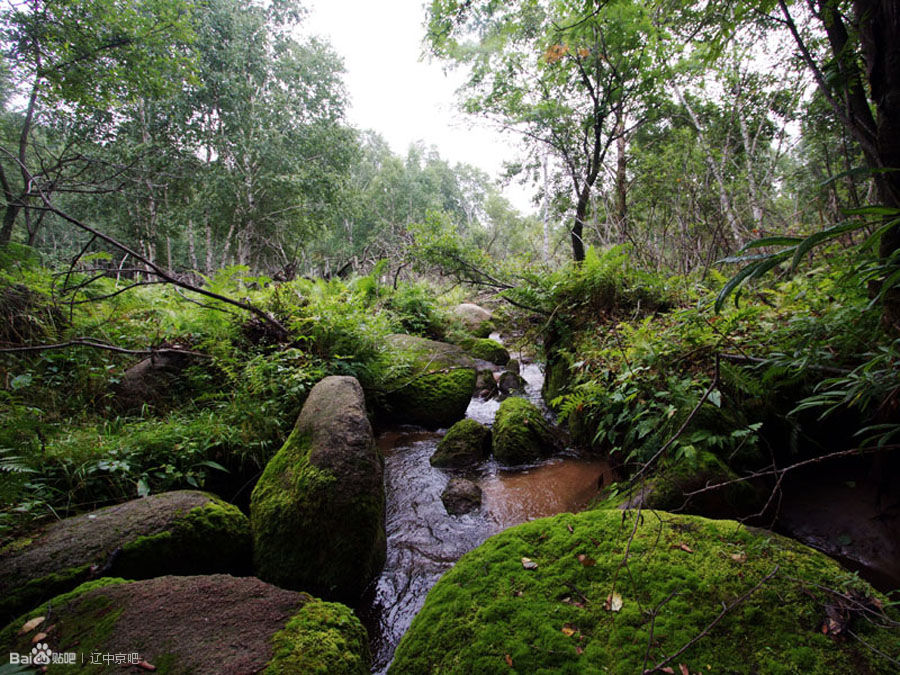
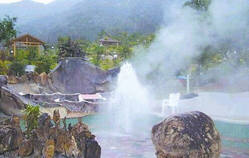
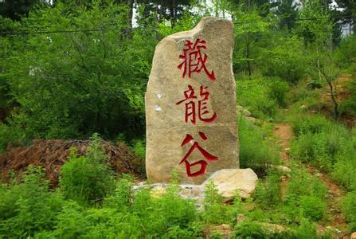
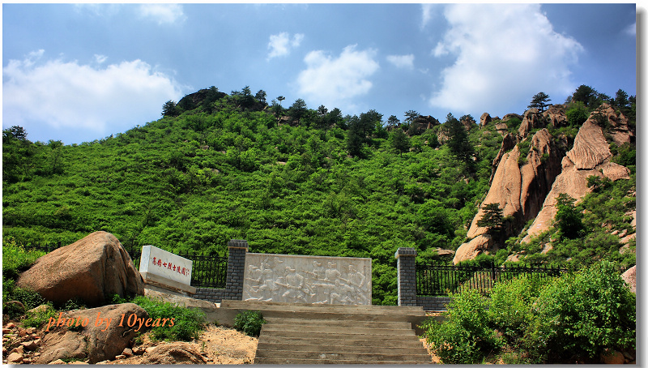

宁城县
地处燕山山脉东段北缘，属老哈河冲积平原。地势西高东低，最高处为三座店乡龙潭梁翠云峰，海拔1890.9米，最低处为五化镇的小乌兰哈达沟，海拔429米。总面积4305平方公里，耕地142万亩，森林覆盖率45.6%。地貌为七老图山屏峙西侧，努鲁尔虎山由西南向东北逶迤延伸，老哈河、坤都伦河由西南流向东北。西部山峦起伏，中部丘陵广阔，沿河平川狭长，构成了“五山四丘一分川”的地貌特征。
属温带半干旱大陆性季风气候，年日照达到2800-2900小时，年均积温2100-3200℃，平均气温2.8-7.5℃，无霜期110-150天。年均降水量430-500毫米，高于全市其他旗县区。共有耕地154万亩，有效灌溉面积93.4万亩。有林面积303.5万亩，森林覆盖率47%，高出全市12个百分点、全区27个百分点。
正常年日照时数2800～2900小时，日照百分率为64～66%，4至9月份日照时数为1500～1550小时，可满足主栽作物谷子、玉米、高粱等生长需要。年太阳总辐射量131.29千卡/厘米²，其中春季50.01千卡/厘米²，夏季41.62千卡/厘米²，秋季19.83千卡/厘米²，农作物生育期的4～9月为88.54千卡/厘米²，占全年的67.4%。光合作用有效辐射64.33千卡/厘米²，日平均温度≥0℃活动积温问光合作用有效辐射49.16千卡/厘米²，占全年76.4%；日均温度≥1O℃活动积温间光合作用有效辐射为37.14千卡/厘米²，占全年的58%。光能利用率仅为0.2%，利用潜力很大。
多年平均全县降水总量21.22亿米³，主要是由老哈河、坤都伦河两个水系构成。老哈河发源河北省平泉县境内，沿七老田山山脉脚下由西南流向东北，从宁城甸子乡入境，汇合黑里河、八里罕河等大小十几条河流，斜穿境内8个乡入境，境内流长85公里。坤都伦河发源于境内存金沟乡龙潭梁，东西流经5个乡镇，泣长45公里，于汐子镇北山嘴汇老哈河一起流出境外。
境内有一级支流6条，二级支流5条，在老哈河支流一黑里河上游建有库容1．1亿立方米的打虎石水库，用于灌溉、发电和养鱼，并建有万米灌渠8处。其中分布在老哈河水系19.21亿米³，大凌河水系2.0l亿米³。全县多年平均径流总量3.49亿米³，其中老哈河流域3.13亿米³。（包括坤头河流域0.97亿米³）；大凌河流域36亿米³。来自县外地表客水1.77亿米³，可开采的陋下水1.68亿米³，其中较丰富的老哈河流域占77.7%，坤头河流域占18.8%，大凌河流域占5.35。共修水库24座，塘坝121座，配套机电井3094眼。
紫蒙湖 点击图片不要小气
.jpg)
又名打虎石水库，是打虎石塞外度假旅游区的中心。一公里长的拦河大坝建于两山这间，大坝两端用白色石条铺砌的172级台阶可供游人攀援。水库里的鲤鱼，鲢鱼数十万计，重者达30公斤。水库还备有各种机帆船和小木舟供游人乘坐和划桨。库区两岸是高耸入云的奇峰怪石，有的象海豹出水，有的似鱼跃龙门，有的如鸟雀出巢，有的象银蛇出洞，还有金龟睬蛋，石人立崖，雄猪卧顶，银象饮水等惟妙惟肖的石像。
清代法轮寺
.jpg)
法轮寺原为喀喇沁中旗王府家庙，位于今内蒙古赤峰市宁城县大城子镇政府西院。原系元臣济拉玛之后裔、喀喇沁部落蒙古王公的旗庙。该寺为清代较著名的十大黄教寺庙之一。法轮寺始建于清乾隆十年（1745年），竣工于嘉庆八年（1803年），历经58年。建在辽、金、元时期的灵隆寺废墟之上，规模宏大，气势雄伟，全寺占面积22000平方米，原有14幢主体建筑和8幢辅助建筑，全部建筑呈现在由南至北、由低至高的一条轴线上。建筑材料主要是石、木、青砖、青瓦、画栋雕梁，是全县保存下来的古建筑中最完美的一组建筑群。
黑里河林区 点图
又名
黑里河自然保护区。1996年晋升为内蒙古自治区级自然保护区，2003年经国务院批准晋升为国家级自然保护区。总面积为27638公顷。主要保护对象是以大面积天然油松林为代表的暖温型针阔混交林生态系统及生物多样性资源。区内峰峦叠翠，森林茂密，有松、柏、枫、椴、柞、桦等几十个树种；有山葡萄、蕨菜、蘑菇、黄花、山核桃、山杏、山枣、山梨等野菜野果。每当春夏之季，各种山花竞相开放，争奇斗艳。此处还是飞禽走兽的乐园。山鸡、黄莺、山鹰、百灵等飞舞鸣叫，狍子、狐狸出没山林。很久以前这里就是很多文人墨客、帝王将相游玩狩猎的场所。清康熙帝曾在此围猎。今在打鹿沟门隔河的石壁上仍留有清乾隆帝的御笔题词。
热水温泉

热水温泉资源得天独厚。中心孔泉水温最高时达97℃，是全国水温最高的温泉之一。泉水中含多种微量元素，对许多疾病有很好的辅助疗效。该温泉开发利用已有千余年的历史，早在辽代，辽太宗及后继皇帝先后来此沐浴。清康熙帝巡视塞外时也曾在此沐浴，至今留有康熙沐井遗址。现已在其遗址上建起了“圣泉亭”，成为度假村一景。热水镇已被建设部列为全国500个重点建设城镇之一。
辽中京遗址 点图
.jpg)
辽中京是辽的政治、经济、文化中心之一，其规模样式仿照北宋都城汴梁而建。设有三重城墙，呈“回”字形分布，外城居住汉、回、女真等民族百姓，内城主要是契丹平民和一些身份低微的官吏，皇城居住的是契丹贵族，皇城内建有祖庙和各类宫殿等大型建筑，造型优美，气势恢弘。内蒙古赤峰市辽中京遗址上的八角密檐式砖塔（俗称大明塔），是中国现存体积最大的辽代古塔。新中国成立后，辽中京遗址被定为国家一级文物保护单位。
藏龙谷
藏龙谷自然风景区地处燕山北麓七老图山脉，景区内怪石嶙峋、奇峰壮美，走进藏龙谷仿佛走进了颇具意境的山水画卷，这里的异峰巧石、山泉飞瀑及深林奇树共同组成了一幅幅相映成趣、妩媚动人的自然绝景。“藏龙谷”之名更是得益于酷似一条青龙的巨大岩石“青龙岩”。
葫芦峪位于宁城县西北部小城子镇。这里是地处七老图山脉的深山老林，北与喀喇沁，南与大城子镇的张麻子村相邻，是宁城县西部著名的自然风景区之一。该景区东西长约5公里，南北宽约3公里，在深山老林中因山峰环绕状似葫芦而得名。
佛事活动查玛舞
查玛, 民间俗称“跳大鬼”，是一种传承很久的宗教舞蹈。每逢庙会或佛事活动均跳查玛舞。这种舞蹈在寺庙佛祖宗喀巴的大殿前举行。据传，大地复苏，有了人间。而统管人间的“千手千眼佛”（即凶神）和麦德尔宝日汗（即吉神）相争天下，互不相让。于是他们约定，他们眼前各有一朵小红花，闭目合掌默咒后，谁眼前的小红花先开，谁就主管天下。
不多时，吉神麦德尔宝日汗的花先开了，因他闭目看不见，却被凶神千手千眼佛的一只眼偷看见了，便把红花用一只手盗换自己面前，于是，他就这样窃取了掌管天下的大权。由于他是凶神，所以他管理的天下奸人、坏人作恶多端，民不聊生。人们期盼太平，就扮成吉神麦德尔宝日汗手下的神与恶神千手千眼佛展示博斗，直到全部战死，最后，天下终归吉神麦德尔宝日汗掌管，人们过上了平安幸福的生活。
跳查玛舞时，寺庙众僧头戴面具，身穿彩衣，法器吹出“哞哞”低沉的吼声，鼓乐齐鸣，在鼎沸声中，各角色按序先后出场，脚踏节拍，跳出不同形式的舞蹈。查玛舞大体可分“跳白鬼”、“跳螺神”、 “跳天王”、“跳猴神”和“跳蝶神”等五幕。表演各具特色，白面鬼者舞的活泼幽默；螺神者舞的缓慢稳重；天王者舞的豪放刚劲；猴神者舞的逼真有趣。整个舞蹈表现出驱逐邪恶，祈求平安，与妖魔作斗争的场面。
.jpg)